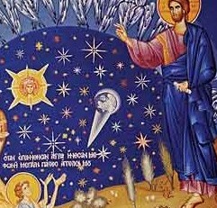
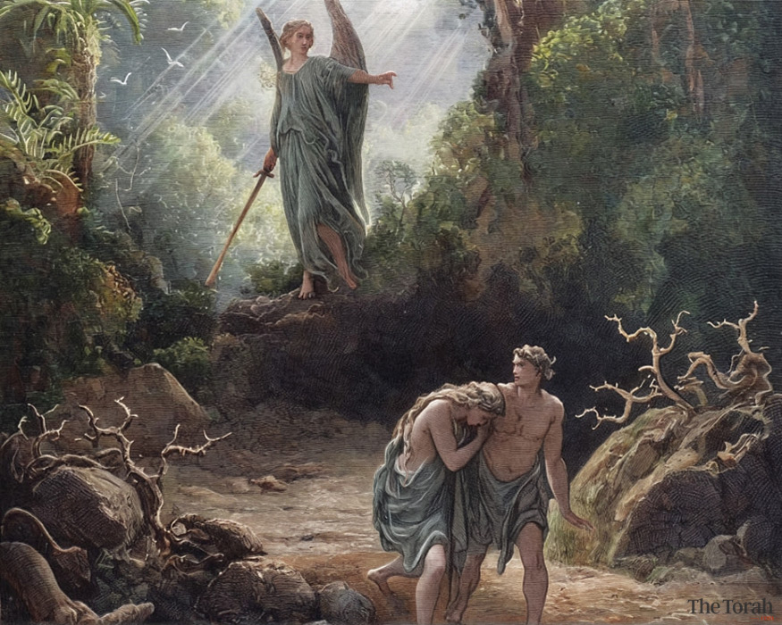

Chapter 1
Summary: The creation of the world in six days. God brings order from chaos, separating light from darkness, forming the earth, seas, vegetation, stars, animals, and culminating with the creation of humanity in His own image.
1 In the beginning Elohim created hashomayim (the heavens, Himel) and haaretz (the earth).
2 And the earth was tohu vavohu (without form, and void); and darkness was upon the face of the deep. And the Ruach Elohim was hovering upon the face of the waters.
3 And Elohim said, Let there be light: and there was light [Tehillim 33:6,9].
4 And Elohim saw the light, that it was tov (good); and Elohim divided the ohr (light) from the choshech (darkness).
5 And Elohim called the light Yom (Day), and the darkness He called Lailah (Night). And the erev (evening) and the boker (morning) were Yom Echad (Day One).
6 And Elohim said, Let there be a raki’a (expanse, dome) in the midst of the mayim (waters), and let it divide the waters from the waters.
7 And Elohim made the raki’a, and divided the waters under the raki’a from the waters above the raki’a; and it was so.
8 And Elohim called the raki’a Shomayim (Heaven). And the erev and the boker were Yom Sheni (Day Two).
9 And Elohim said, Let the waters under the heaven be gathered together unto one place, and let the yabashah (dry land) appear; and it was so.
10 And Elohim called the yabashah Eretz (Earth); and the mikveh (gathering of waters) called He Seas; and Elohim saw that it was tov.
11 And Elohim said, Let the earth bring forth vegetation, the herb yielding zera (seed), and the fruit tree yielding pri (fruit)... and it was so.
12-13 And the earth brought forth vegetation... and Elohim saw that it was tov. And the erev and the boker were Yom Shlishi (Day Three).
14-19 And Elohim said, Let there be lights in the raki’a... to divide the day from the night. He made two great lights and the kokhavim (stars). And it was Yom Revi’i (Day Four).
20-23 And Elohim said, Let the waters bring forth abundance of living creatures... and fowl that fly. And Elohim blessed them. And it was Yom Chamishi (Day Five).
24-25 And G-d made the beast of the earth after its kind, and cattle, and everything that creepeth... and G-d saw that it was tov.
26 And G-d said, Let Us make man in Our tzelem (image), after Our demut (likeness): and let them have dominion over the fish of the sea, and over the fowl of the air...
27 So G-d created humankind in His own tzelem, in the tzelem Elohim created He him; zachar (male) and nekevah (female) created He them.
28-30 And G-d blessed them, saying, Be fruitful, multiply, fill the earth, and subdue it... I have given every green herb for food.
31 And G-d saw every thing that He had made, and, behold, it was tov me’od (very good). And the erev and the boker were Yom Shishi (Day Six).

Day 1: "Let there be light."
Chapter 2
Summary: God rests on the seventh day. A closer look at humanity's creation: God forms man from the dust, places him in the Garden of Eden with the Tree of Life, and creates woman from his rib to be his companion.
1 Thus HaShomayim and Ha’Aretz were finished, and all the tza’va of them.
2 And on Yom HaShevi’i (The Seventh Day) Elohim finished His work which He had made; and He rested on the Yom HaShevi’i from all His work.
3 Vayevarech Elohim et Yom HaShevi’i, and set it apart as kadosh (holy): because in it He had rested.
4-6 These are the toldot of HaShomayim and Ha’Aretz... a mist went up from the earth, and watered the whole face of the adamah.
7 And Hashem Elohim formed the adam of the aphar (dust) min haadamah (from the ground), and breathed into his nostrils the nishmat chayyim (breath of life); and the adam became a nefesh chayyah (living soul).
8-9 And Hashem Elohim planted a gan (garden) eastward in Eden; and there He put the adam... the Etz HaChayyim (Tree of Life) also in the midst of the gan, and the Etz HaDa’as Tov v’Rah (Tree of Knowledge of Good and Evil).
10-14 And a nahar (river) flowed out of Eden to water the gan; and from there it divided... Pishon, Gihon, Chiddekel (Tigris), and Euphrates.
15-17 And Hashem Elohim put him in the Gan Eden to work it... But of the Etz HaDa’as Tov v’Rah, thou shalt not eat of it; for in the yom that thou eatest thereof thou shalt surely die.
18 And Hashem Elohim said, It is not tov that the adam should be alone; I will make him an ezer (a helper) suitable for him.
19-20 And out of the adamah Hashem Elohim formed every beast... but for Adam there was not found an ezer.
21 And Hashem Elohim caused a tardemah (deep sleep) to fall upon the adam... and He took from one of his tzalelot (ribs).
22-23 And the tzela (rib)... made He an isha (woman). And the adam said, This is now etzem (bone) of my etzem, and basar (flesh) of my basar.
24-25 Therefore shall an ish leave his av (father) and his em (mother), and shall cleave unto his isha... And they were both arummim (naked), and were not ashamed.
The Garden of Eden
Chapter 3
Summary: The serpent deceives Eve, leading to the Fall of humanity. Sin enters the world, Adam and Eve are exiled from the Garden, cursed with pain and toil, yet God gives the very first promise of a future Savior (The Protoevangelium).
1 Now the Nachash (Serpent) was more arum (cunning) than any beast... And he said unto the isha, Really? Hath Elohim said, Ye shall not eat of kol etz hagan?
2-5 The isha said... Elohim hath said, Ye shall not eat of it... lest ye die. And the Nachash said: Ye shall not surely die; for your eyes shall be opened, and ye shall be like Elohim.
6 And when the isha saw that HaEtz was tov for food... she took of the p’ri (fruit) thereof, and did eat, and gave also unto her ish with her; and he did eat.
7-10 And the eyes of them both were opened... they heard the kol (voice) of Hashem Elohim walking in the gan... And HaAdam said, I hid because I was eirom (naked).
11-13 And He said... Hast thou eaten of HaEtz? HaAdam said, The isha gave me... The isha said, The Nachash beguiled me.
14-15 And Hashem Elohim said unto the Nachash... arur (cursed) art thou. And I will put eivah (enmity) between thee and HaIsha, and between thy zera (seed) and her Zera; it shall crush thy rosh (head), and thou shalt strike his akev (heel).
16 Unto HaIsha He said, I will greatly multiply thy itzavon (pain) and thy childbearing.
17-19 And unto Adam He said... arurah (cursed) is haadamah because of thee; in sweat of thy brow shalt thou eat lechem (bread), till thou return unto haadamah... for aphar (dust) thou art, and unto aphar shalt thou return.
20-21 And HaAdam called the shem of his isha Chavah (Eve)... Unto Adam also and his isha did Hashem Elohim make kesonos ohr (garments of skin), and clothed them.
22-24 And Hashem Elohim said... lest he put forth his yad, and take of HaEtz HaChayyim, and live forever. So He drove out HaAdam; and placed... a flaming cherev (sword) to guard the Way of the Tree of Life.

The Exile from Eden